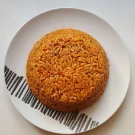

We make local and intercontinental cuisines

Jollof, or jollof rice, is a rice dish from West Africa. The dish is typically made with long-grain rice, tomatoes, chilies, onions, spices, and sometimes other vegetables and/or meat in a single pot, although its ingredients and preparation methods vary across different regions
Learn moreSwallows are a category of soft cooked dough that can be made from roots, tubers, vegetables, and more, served as a starch at mealtimes in Nigeria. One of the most popular Nigerian swallows is eba, made by mixing garri (dried cassava meal) with boiling water. You can think of eba like polenta, although made with less liquid.
Learn moreEfo riro is a vegetable soup and a native soup of the Yoruba people of South West Nigeria and other parts of Yorubaland. The two vegetables most commonly used to prepare the soup are Celosia argentea and Amaranthus hybridus. The history of Efo riro is deeply rooted in the Yoruba culture.
Learn more